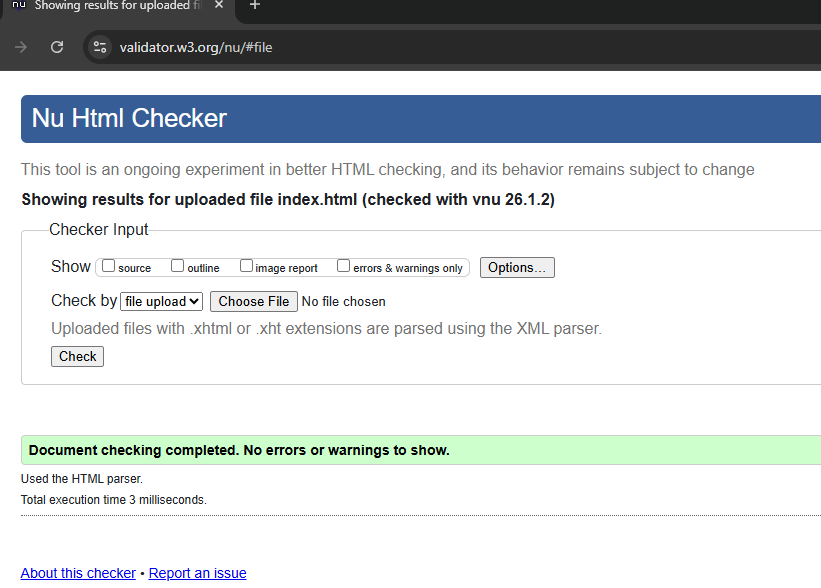
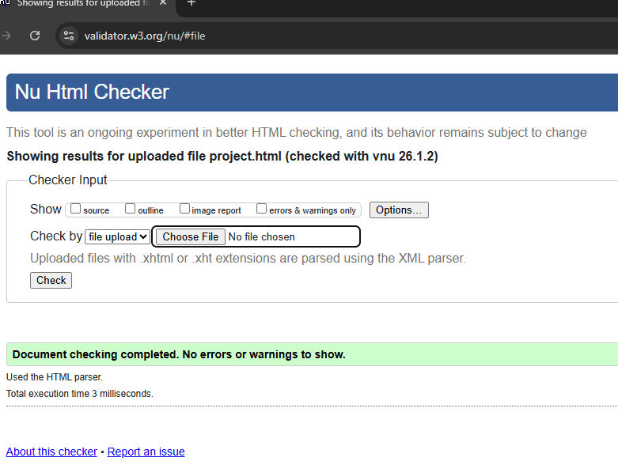
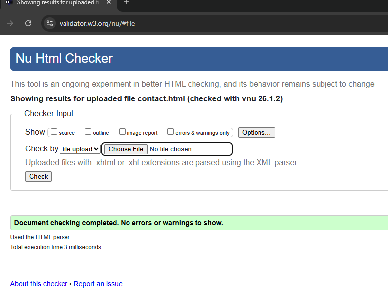
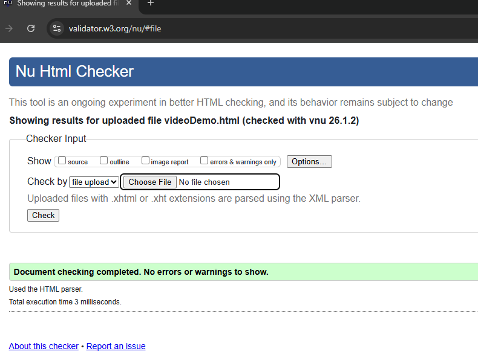
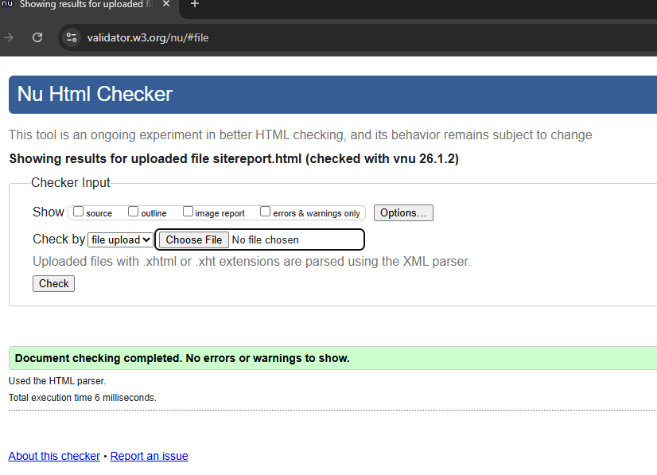
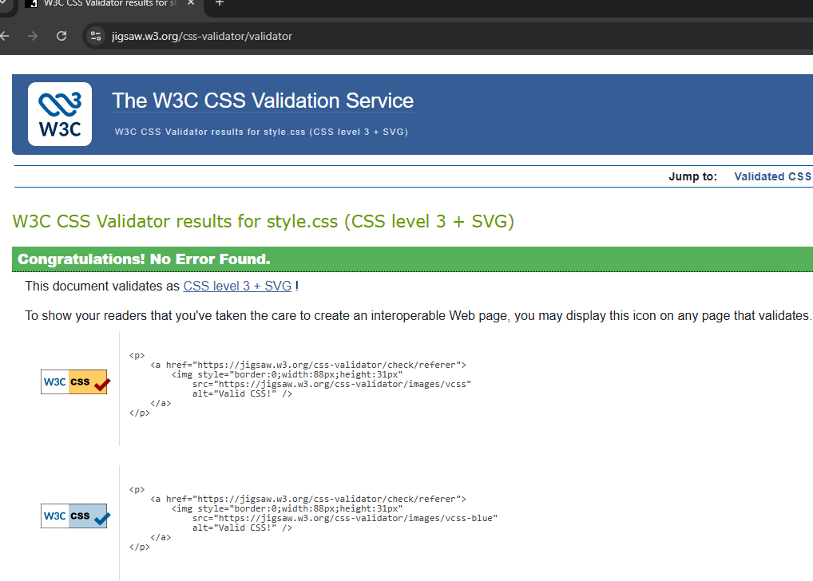

Site Report
For the CSY1063 Web Development module, I built a portfolio website to showcase my work. The task was to design a responsive multi‑page site using only HTML and CSS, while making sure it followed modern web standards. Working on this project gave me the chance to practice structuring a website properly and to improve my confidence in front‑end coding.
Early on, I planned the layout and decided the site would have five main pages: Home, Projects, Contact, Video Demo, and Site Report. To keep everything consistent, I reused the same navigation bar, header, footer, and colour scheme across all pages. This made the site feel unified and easier for visitors to move around, which was one of my design priorities.
As I developed the pages, I experimented with CSS to manage spacing, alignment, and responsiveness. On the Projects page, I used a grid layout so that items appear in a single row on desktop screens, but automatically adjust to two columns on tablets and one column on mobile devices. I also added a simple hamburger menu built with CSS so that navigation works smoothly on smaller screens. These changes helped the site adapt well to different devices.
Validation was another key part of the assignment. I checked each HTML file using the W3C HTML Validator, uploading them one by one and fixing issues such as missing alt text and minor formatting errors until the validator reported “No errors or warnings to show.” For the stylesheet, I used the W3C CSS Validator, which confirmed “Congratulations! No Error Found.” Screenshots of these results are included in this report as evidence that the code meets official standards.
Along the way, I faced small challenges like uneven text alignment, spacing problems, and making sure images scaled correctly. Regular testing in the browser and repeated validation checks helped me spot and fix these issues. I learned that even small tweaks in CSS can make a big difference to how a site looks and feels.
In the end, this project gave me practical experience in writing clean HTML and CSS and reinforced the importance of responsive design. It showed me how planning, testing, and validating at each stage leads to a better final product. The process of solving problems and refining the site step by step has provided me with a solid foundation for future web development work.
Validation Screenshots
Below are the validation results for my HTML and CSS files:

index.html

project.html

contact.html

videoDemo.html

sitereport.html

style.css